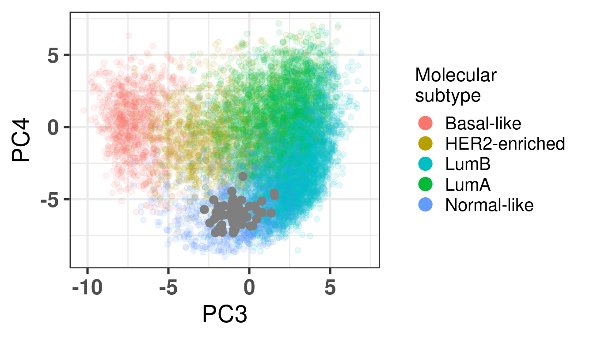

In the last chapters only TCGA and METABRIC samples were used in the training and testing of the PCA projection. To completely validate, we use another big cohort, SCANB, that was not used in the PCA fitting and testing before. This way we ensure that the embedding is independent of the cohort. Moreover, we use the SMC cohort (Kan et al. 2018), whose patients are from South Korea. We show how well it is embedded, and that is not dependent on population characteristics.
* The library is already synchronized with the lockfile.
3.1 SCANB embedding
The embedding was already calculate before when calculating the fit and tests, since the datasets were organized and loaded together. We also know already that all the 1044 genes are available in the SCANB cohort. SCANB is well mixed with all cohorts as Figure 3.1 shows.
Figure 3.1: PCA embedding colored by cohort. All samples from TCGA, METABRIC and SCANB were used.
Ideally there would be some overlap between SCANB and TCGA already in the first component. Moreover, if there isn’t, the cohort should be closer to TCGA than to METABRIC, due to technologies and normalization procedures, as both of them are log FPKM. Even though SCANB was processed in a way to get directly FPKM values, by using cufflinks, TCGA was normalized to get log FPKM as well, as discussed previously. Figure 3.2 shows how close SCANB is from TCGA, moreover there is already some overlap. The variability in the first component is bigger for METABRIC compared to TCGA and SCANB. Probably this is due to the technology processing, since they have genes in the same scale. Figure 2.22 contrasts the different normalization procedures. If genes are not scaled correctly, the PCA shows an inverse picture.
Figure 3.2: PCA embedding colored by cohort. The components used are the first and second components.
Figure 3.3 shows that the SCANB samples are also well mixed regarding the clinical factors, including the \(SET_{ER/PR}\) signature.
Figure 3.3: PCA embedding of all samples from TCGA, SCANB and METABRIC. (A) Colored by cohort, (B) colored by ER status, (C) colored by PAM50 molecular subtype, (D) colored by the \(SET_{ER/PR}\) signature and only SCANB samples.
3.2 Missing genes
Genes missing in publicly available datasets is very common. Usually this is due to processing pipelines or even data quality, therefore genes are removed. This should not be much of a problem, if the data is good enough, when calculating the qPCR-like normalization as it was shown before. The problem arises when multiplying the loadings obtained in the PCA with the normalized expression of the sample. If several genes are missing, 0s are added to the matrix and therefore the loadings for these genes cannot be used. Since 1000 genes were used, we investigate the loadings of genes and try to calculate a fuzziness score, indicating when the embedding should be trusted if genes are missing, and which genes are missing.
3.2.1 Fuzziness score
The idea of the fuzziness score is that we use the loadings of the missing genes and calculate the cumulative sum of their absolute values. The higher this value the more it indicates the missing genes are important. We start by removing random genes from random samples of the SCANB cohort. Each sample will have a random number of genes removed from the set of 1044 genes. Then two scores are calculated, one for PC2 and another for PC3. We also calculate the fuzziness score for the top loading genes and the low loadings genes, to compare these values.
We start by comparing the scores from top loadings and low loading genes. For this we remove the top 50 loadings and bottom 50 loadings, in terms of absolute values. Figure 3.4 shows the cumulative sum of the absolute values from the top and bottom loadings respectively. See how important the top loadings are compared to the bottom loadings. A way of thinking of this is that the top loadings weights are much more important when calculating the embedding.
Figure 3.4: Cumulative sum of absolute values for the top loadings and bottom loadings as a function of the number of selected genes.
This was using the top loadings, so probably the fuzziness score of a sample with relatively good data will be between 0 and 12 maximum, meaning that they have less than 200 genes missing. When genes are missing, we hope that they are in the bottom part of the loadings, so the fuzziness score is as small as possible.
Suppose now that the genes missing in a sample are random. We will calculate random fuzziness scores based on this to have a feeling of the scores.
Figure 3.5: Distribution of the fuzziness scores from random missing genes. Each color corresponds to a different distribution using a different number of genes.
Figure 3.5 shows the results as a function of the number of missing genes. We see that in average, if 200 genes are missing, the fuzziness score is around 5. If less than a 100 genes are missing, the fuzziness score is around 3. In the next section we show how this influences the position where the sample is projected into the embedding.
Finally, we calculate the fuzziness score as a number of top loadings missing. Suppose 150 genes are missing. We will change the proportion of genes that are in the top loadings and in the missing list. Since the cumulative sum for PC2 and PC3 are very similar, we focus only on PC2.
Figure 3.6: Distribution of the fuzziness scores from 150 random missing genes with different proportions of top loading genes in the list. Each color corresponds to a different distribution using a different proportion of genes.
Figure 3.6 shows the fuzziness score with different proportions of the top loading genes. We see that they are actually very important when calculating the score. The top loading genes were defined as the top 150 genes in the list. So when calculating the number of missing genes it is important to check the number of top loadings in the list.
3.2.2 Validating the score
In this section we calculate the embeddings with different number of genes missing from a given sample and then plot the original embedding with the newly one. For this we use samples from TCGA. The genes are removed even before the normalization procedure, as they are usually not available there. We select randomly a number of top genes from PC3 and PC4 to compose the list of missing genes. The proportion of the top loading genes is varied.
When looking at the figures above, it seems that whenever there are genes missing, and the more of top loadings they are, the closer they are to the origin. This makes sense, since PCA is doing a simple linear combination of the loadings. This should be fine to correct, since we can fit a line going through the origin and goes through the points above. Then the adjustment will depend on the number of genes that are missing and are top loadings. The more they are, the more adjustment we will need.
For the adjustment we only know two things, its current position and how many of the top loadings are missing. Based on this information we should be able to correct the samples. Given the list of genes that are missing, we fit lines that would go through the genes that are missing in the TCGA and METABRIC samples. We then try to find the line that is closes to the point. After performing the fit and the line, we can then move the point to closer to the METABRIC and TCGA samples. The point should be close to the line and close to points that have the same proportion of top loadings missing.
These plots show how the fuzziness score might be indicative of how good the embedding will be depending on the number of missing genes. The video below shows the images for 20 different patients. Notice how all of them are connected to the origin as well.
3.3 SMC embedding
By following the same procedures as previously, normalizing and getting the PC coordinates, Figure 3.13 shows the biplot of PC1 and PC2 when coloring by cohorts. The samples seem to be well mixed already in the RNA-seq samples. This is probably due to the fact that the SMC cohort has TPM values.
Total number of stable genes: 44
Total number of genes: 1040
Number of samples: 168
When checking the total number of genes missing, there are only 4 genes missing. And as seen before, this number is almost irrelevant, in the sense that the embedding will still be robust and locations will be precise enough.
Figure 3.13: Biplot of first two PCA components from SMC, TCGA, SCANB and METABRIC. SMC is highlighted in the plot and has a bigger dot.
As previously, Figure 3.14 shows the biplot of PC3 and PC4, highlighting the well mixing of the cohorts. When coloring by ER status, samples are in the right group. Molecular subtype is also correct. This cohort is special in the sense that there are more luminal B patients, as discussed in the paper. That is why there are more samples in the luminal B region.
Figure 3.14: PCA embedding of all samples from TCGA, SCANB and METABRIC including the SMC samples on top. (A) Colored by cohort, (B) colored by ER status, (C) colored by PAM50 molecular subtype.
3.4 PDX
Another way to validate the results is to use patient derived xenografts. In the Brisken lab the MIND model is used (Sflomos et al. 2016; Scabia et al. 2022). ER+ breast cancer samples coming from patients are processed in a specific way and injected into the mammary glands of mice. Based on that they can stablish themselves and proliferate. The environment should recapitulate what is seen in women as well, in the sense that estrogen (E2) levels are similar to those of post-menopausal women. Since these cells have to proliferate in order to establish and grow in the ducts, we expect them to be more proliferative in terms of RNA-seq components and also to lie in the luminal B region of the molecular landscape. We validate this now.
Total number of stable genes: 44
Total number of genes: 1017
Number of samples: 76
When checking the total number of genes missing, there are only 27 genes missing. And as seen before, this number is almost irrelevant, in the sense that the embedding will still be robust and locations will be precise enough.
Figure 3.15: Biplot of first two PCA components from PDX, TCGA, SCANB and METABRIC. PDX is highlighted in the plot and has bigger dot size.
As previously, Figure 3.16 shows the biplot of PC3 and PC4, highlighting the well mixing of the cohorts. As expected the samples are overall in the luminal B region, since these are tumor cells in a proliferative state.
Figure 3.16: Embedding of all samples from TCGA and METABRIC including the PDX samples on top.
Figure 3.17: Embedding of only PDX control samples on top of the METABRIC, SCANB and TCGA samples
3.5 Normal samples
We now further validate the molecular landscape on the normal samples that were sequenced using the same pipeline as the SCANB data. These are samples obtained from reduction mammoplasty of swiss women and were sent to Sweden for the tissue processing and sequecing. The hypotheses here is that the samples will be embedded in the region of the normal like BC samples.
Total number of stable genes: 44
Total number of genes: 1044
Number of samples: 66
When checking the total number of genes missing, there are only 0 genes missing, i.e., no genes were missing. This makes sense as these samples were processed in the same way as the ones from SCANB.
Figure 3.18: Biplot of first two PCA components from Normal Swiss Cohort, TCGA, SCANB and METABRIC. The normal cohort is highlighted in the plot and has bigger dot size.
As previously, Figure 3.19 shows the biplot of PC3 and PC4, highlighting the well mixing of the cohorts. As expected the samples are overall in the luminal B region, since these are tumor cells in a proliferative state.
Figure 3.19: Embedding of all samples from TCGA, SCNAB and METABRIC including the Normal samples on top.

Figure 3.20: Embedding of Normal Swiss cohort with the other cohorts colored by the PAM50.
3.6 Third component as a prognostic measure?
We have seen that estrogen signaling is a continuous measure across the third component. The farthest to the right you are the higher the ER signaling scores are also. Here we hypothesized then that the third component is correlated to the prognostic nature of the estrogen signaling score. For this we select only samples with PC3 higher than 0, as these would be the ones that are from luminal A and B subtypes and we use PC3 as a score in the survival analysis.
cohort
number_patients
nb_events
SCANB
3297
565
METABRIC
724
445
SCANB High ER
709
147
First we check the correlation of PC3 with estrogen response early and G2M checkpoint.
There is indeed the correlation with the components but still a lot of variability. So it will be unlikely to see such strong effects on the third component.
The table below shows the results for the survival analysis using all the samples from SCANB and METABRIC coming from patients that received only endocrine therapy and whose samples had a \(PC3 > 0\). OS means overall survival and RFS means recurrence free survival.
We see that in all cases the HR for PC3 is below 1, for OS it ranges from 0.95 to 0.97 the HR and for RFS from 0.88 to 0.89. What is interesting to note here is that in all cases the confidence interval is crossing 1, as expected due to the variability of the correlation with SET ER/PR and estrogen response early. Also it is interesting to note that the confidence interval does not cross so much into the values higher than 1. Remember that the hazard ratio scale is not linear. Indeed it seems that the more a sample is on the right side of the plot the better is its outcome. Notice that the scale for HR is different for PC3 and SET ER/PR, since one is a positive score ranging from 0 to 8 and the other is a score ranging from -1 to 1. If we were to rescale SET ER/PR to an interval between 0 to 10 by multiplying by 5 and then summing 5, we would get hazard ratios in the range of 0.8. Moreover, estrogen signaling is not the only thing fully explaining the third component as it can be seen from Figure 2.24. In this case, G2M Checkpoint and PI3K signaling have also a role in the third component.
3.7 High risk patients
The Prosigna risk of recurrence score takes into account the tumor stage and the molecular subtype, this is the ROR-C and the formula from the original paper is presented below:
We see that if a tumor sample has a high correlation to the luminal A subtype it will decrease the score, whereas for all other cases there is an increase in the risk. We want to evaluate if the position in the molecular landscape is somehow correlated with the risk score, specially in the forth component for luminal A patients.
In (Staaf et al. 2022) they showed that they are able to predict the Prosigna binary categories high or low/intermediate risk for the patients based only on the RNA-seq provided by their pipeline. We use these categories here to understand the molecular scores of the samples and also their correlation with the position and risk groups. All the following analysis are done for ER+ BC patients only.
First we stratify the risk groups by the molecular subtype.
As expected the majority of luminal A patients are low/intermediate risk, on the other hand most of the luminal B patients are considered of high risk.
If we look more specifically for luminal A patients and stratify on the tumor stage we get the following numbers.
We see that for tumor stage 1 the number of high individuals is lower in percentage than in tumor stage 3, as expected. We now plot (Figure 3.21) for all these patients the G2M molecular score, an index of proliferation, stratified by the tumor stage.
Figure 3.21: Luminal A BC patients G2M scores stratified by tumor stage.
We see that in all three cases in average the G2M scores are higher in the high risk groups than in the Low/Intermediate.
We saw previously that some of the G2M checkpoint genes have higher loadings for the fourth component. We now plot the PC4 components stratified by the risk groups for the luminal A patients (Figure 3.22).
Figure 3.22: Luminal A BC patients PC4 values stratified by risk category.
Indeed, in average the higher the PC4, the more likely it is to be in the High risk group. And now we compare the G2M Checkpoint, Estrogen response early and random 200 signature for each molecular subtype separately (Figure 3.23) of ER+ BC patients.
Figure 3.23: ER+ BC patients and molecular scores stratified by molecular subtype and binary risk categories.
We see that in this case the binary risk category has distinct distributions for the G2M checkpoint for all molecular subtypes, in particular with the basal like.
Kan, Zhengyan, Ying Ding, Jinho Kim, Hae Hyun Jung, Woosung Chung, Samir Lal, Soonweng Cho, et al. 2018. “Multi-Omics Profiling of Younger Asian Breast Cancers Reveals Distinctive Molecular Signatures.”Nature Communications 9 (1). https://doi.org/10.1038/s41467-018-04129-4.
Scabia, Valentina, Ayyakkannu Ayyanan, Fabio De Martino, Andrea Agnoletto, Laura Battista, Csaba Laszlo, Assia Treboux, et al. 2022. “Estrogen Receptor Positive Breast Cancers Have Patient Specific Hormone Sensitivities and Rely on Progesterone Receptor.”Nature Communications 13 (1). https://doi.org/10.1038/s41467-022-30898-0.
Sflomos, George, Valerian Dormoy, Tauno Metsalu, Rachel Jeitziner, Laura Battista, Valentina Scabia, Wassim Raffoul, et al. 2016. “A Preclinical Model for ER\(\upalpha\)-Positive Breast Cancer Points to the Epithelial Microenvironment as Determinant of Luminal Phenotype and Hormone Response.”Cancer Cell 29 (3): 407–22. https://doi.org/10.1016/j.ccell.2016.02.002.
Staaf, Johan, Jari Häkkinen, Cecilia Hegardt, Lao H. Saal, Siker Kimbung, Ingrid Hedenfalk, Tonje Lien, et al. 2022. “RNA Sequencing-Based Single Sample Predictors of Molecular Subtype and Risk of Recurrence for Clinical Assessment of Early-Stage Breast Cancer.”Npj Breast Cancer 8 (1). https://doi.org/10.1038/s41523-022-00465-3.
Source Code
# Validating the molecular landscapeIn the last chapters only TCGA and METABRIC samples were used in the trainingand testing of the PCA projection. To completely validate, we use anotherbig cohort, SCANB, that was not used in the PCA fitting and testing before.This way we ensure that the embedding is independent of the cohort. Moreover,we use the SMC cohort [@Kan2018], whose patients are from South Korea.We show how well it is embedded, and that is not dependent on population characteristics. ```{r setup}renv::restore()library(tidyverse)library(ggplot2)library(PCAtools)library(singscore)library(SummarizedExperiment)library(tximport)library(survival)library(forestplot)library(ggplotify)library(gridExtra)source("utils.R")source("first_run.R")# Here we are using rds files from previous chapters, so we source# in any case the load_rds_files.R and exclude all the associated files# that are generated in this current chaptername_document <-"validation"source("load_rds_files.R")# by setting the dev to png and pdf, this saves the figures in a specific# folder in both formats. moreover, since png is coming first, it shows# this figure when rendering the html. What is nice about this is that it# inherits the properties from the chunk to save the figure, so no need# to use ggplot2::ggsave to save the plots. this also works knitr::opts_chunk$set(dev =c('png', 'pdf', 'svg'))options(bitmapType ='cairo')```## SCANB embeddingThe embedding was already calculate before when calculating the fit andtests, since the datasets were organized and loaded together. We alsoknow already that all the 1044 genes are available in the SCANB cohort. SCANB is well mixed with all cohorts as @fig-pca-scanb shows.```{r}#| label: fig-pca-scanb#| fig-cap: PCA embedding colored by cohort. All samples from TCGA, METABRIC#| and SCANB were used. plot_pca_coordinates( df_pca_coordinates %>% dplyr::slice(1:n()),color ="cohort",x ="PC3",y ="PC4",size =1,base_size =10,title =paste0("Embedding of all samples from TCGA,\n","METABRIC and SCANB" )) + ggplot2::scale_color_viridis_d() + ggplot2::theme_bw(base_size =15) +change_plot_aes_point() +change_guides_point()```Ideally there would be some overlap between SCANB and TCGA already in the first component. Moreover, if there isn't, the cohort should be closerto TCGA than to METABRIC, due to technologies and normalization procedures,as both of them are log FPKM. Even though SCANB was processed in a way to get directly FPKM values, by using cufflinks, TCGA was normalized to getlog FPKM as well, as discussed previously. @fig-pca-scanb-pc1 showshow close SCANB is from TCGA, moreover there is already some overlap. The variability in the first component is bigger for METABRIC compared toTCGA and SCANB. Probably this is due to the technology processing, sincethey have genes in the same scale. @fig-pca-no-norm contrasts the differentnormalization procedures. If genes are not scaled correctly, the PCAshows an inverse picture.```{r}#| label: fig-pca-scanb-pc1#| fig-cap: PCA embedding colored by cohort. The components used are the#| first and second components.plot_pca_coordinates( df_pca_coordinates,color ="cohort",x ="PC1",y ="PC2",size =1,base_size =10,title =paste0("Embedding of all samples from TCGA,\n","METABRIC and SCANB" )) + ggplot2::theme_bw(base_size =15) +change_plot_aes_point() +change_guides_point()```@fig-pca-scanb-er-pam50 shows that the SCANB samples are also well mixedregarding the clinical factors, including the $SET_{ER/PR}$ signature.```{r, fig.width=16, fig.height=12}#| label: fig-pca-scanb-er-pam50#| fig-cap: PCA embedding of all samples from TCGA, SCANB and METABRIC.#| (A) Colored by cohort,#| (B) colored by ER status, (C) colored by PAM50 molecular subtype,#| (D) colored by the $SET_{ER/PR}$ signature and only SCANB samples.size <-2base_size <-20plots_with_scanb <-sapply(c("cohort", "er_status", "pam50", "SET_ERPR"), plot_pca_coordinates,df_pca = df_pca_coordinates %>% dplyr::filter( pam50 %in%c("luma", "lumb", "basal", "her2", "normal") ) %>% dplyr::slice(sample(1:n())),x ="PC3", y ="PC4",size = size,base_size = base_size,title =paste0("Embedding of all samples from TCGA,\n","METABRIC and SCANB" ),USE.NAMES =TRUE, simplify =FALSE)plots_with_scanb$cohort <- plots_with_scanb$cohort +change_plot_aes_point() +change_guides_point()plots_with_scanb$pam50 <- plots_with_scanb$pam50 + ggplot2::scale_color_manual(values =get_colors_pam50(plots_with_scanb$pam50$data) ) +change_plot_aes_point() +change_guides_point()plots_with_scanb$er_status <- plots_with_scanb$er_status + ggplot2::scale_color_viridis_d() + ggplot2::labs(color ="ER status") +change_plot_aes_point() +change_guides_point()plots_with_scanb$SET_ERPR <- df_pca_coordinates %>% dplyr::filter(cohort %in%c("scanb")) %>% ggplot2::ggplot(aes_string(x ="PC3", y ="PC4", z ="SET_ERPR")) + ggplot2::stat_summary_hex(bins =25) + ggplot2::scale_fill_viridis_c() + ggplot2::labs(title ="Embedding of SCANB only",fill =expression(SET[ER/PR]) ) + ggplot2::theme_bw(base_size = base_size) +change_plot_aes_point()cowplot::plot_grid(plotlist = plots_with_scanb,ncol =2)```## Missing genesGenes missing in publicly available datasets is very common. Usually this isdue to processing pipelines or even data quality, therefore genes are removed.This should not be much of a problem, if the data is good enough, when calculating the qPCR-like normalization as it was shown before. The problemarises when multiplying the loadings obtained in the PCA with the normalized expression of the sample. If several genes are missing, 0s are added to the matrix and therefore the loadings for these genes cannot be used. Since 1000 genes were used, we investigate the loadings of genes and try to calculate a fuzziness score, indicating when the embedding shouldbe trusted if genes are missing, and which genes are missing. ### Fuzziness score The idea of the fuzziness score is that we use the loadings of the missinggenes and calculate the cumulative sum of their absolute values. The higher this valuethe more it indicates the missing genes are important. We start byremoving random genes from random samples of the SCANB cohort. Each samplewill have a random number of genes removed from the set of 1044 genes. Then two scores are calculated, one for PC2 and another for PC3. We alsocalculate the fuzziness score for the top loading genes and the low loadings genes, to compare these values.We start by comparing the scores from top loadings and low loading genes. Forthis we remove the top 50 loadings and bottom 50 loadings, in terms ofabsolute values. @fig-loadings-top-bottom shows the cumulative sumof the absolute values from the top and bottom loadings respectively. See how important the top loadings are compared to the bottom loadings. A way ofthinking of this is that the top loadings weights are much more importantwhen calculating the embedding.```{r}#| label: fig-loadings-top-bottom#| fig-cap: Cumulative sum of absolute values for the top loadings and#| bottom loadings as a function of the number of selected genes.which_loadings <-c("PC3", "PC4")n <-200top_or_bottom <-c("top", "bottom")fuzziness_scores_top <-sapply(1:n,function(n, pca_fit){ top_loadings <-apply( pca_fit$loadings[, which_loadings],2,function(x, gene_names){ gene_names[order(abs(x), decreasing =TRUE)[1:n]] },gene_names =rownames(pca_fit$loadings) )get_fuzziness_score(top_loadings, pca_fit, which_pcs =3:4) },pca_fit = pca_fit) %>% t %>% data.frame %>%`colnames<-`(which_loadings) %>% dplyr::mutate(n =1:n())fuzziness_scores_bottom <-sapply(1:n,function(n, pca_fit){ top_loadings <-apply( pca_fit$loadings[, which_loadings],2,function(x, gene_names){ gene_names[order(abs(x), decreasing =FALSE)[1:n]] },gene_names =rownames(pca_fit$loadings) )get_fuzziness_score(top_loadings, pca_fit) },pca_fit = pca_fit) %>% t %>% data.frame %>%`colnames<-`(which_loadings) %>% dplyr::mutate(n =1:n())fuzziness_scores <- dplyr::bind_rows(list(top = fuzziness_scores_top, bottom = fuzziness_scores_bottom),.id ="top_or_bottom") %>% dplyr::mutate(top_or_bottom =factor(top_or_bottom, levels =c("top", "bottom")))fuzziness_scores %>% tidyr::pivot_longer(cols = dplyr::all_of(which_loadings),names_to ="PC",values_to ="fuzziness_score") %>% ggplot2::ggplot(aes(x = n, y = fuzziness_score, color = PC)) + ggplot2::geom_line(size =3, alpha =0.5) + ggplot2::scale_color_viridis_d() + ggplot2::facet_wrap(~top_or_bottom) + ggplot2::labs(x ="Number of genes",y ="Fuzziness score",color ="Principal\ncomponent" ) + ggplot2::theme_bw(base_size =15) + ggplot2::theme(legend.position =c(0.65, 0.8))```This was using the top loadings, so probably the fuzziness score of a samplewith relatively good data will be between 0 and 12 maximum, meaning thatthey have less than 200 genes missing. When genes are missing, we hope thatthey are in the bottom part of the loadings, so the fuzziness scoreis as small as possible. Suppose now that the genes missing in a sample are random. We will calculaterandom fuzziness scores based on this to have a feeling of the scores. ```{r, eval = first_run}nb_of_genes <-seq(from =2, to =220, by =20)list_of_random_genes <-lapply( nb_of_genes,function(n, genes){sapply(1:1000,function(x, genes, n){sample(genes, size = n) },genes = genes,n = n,simplify =FALSE ) },genes =rownames(pca_fit$loadings))fuzziness_scores_random <-lapply( list_of_random_genes,function(list_genes, pca_fit){sapply( list_genes, get_fuzziness_score,pca_fit = pca_fit ) %>% t %>% data.frame %>%`colnames<-`(which_loadings) },pca_fit = pca_fit) %>%`names<-`(paste0("#", nb_of_genes)) %>% dplyr::bind_rows(., .id ="nb_genes") %>% dplyr::mutate(nb_genes =factor( nb_genes,levels =paste0("#", nb_of_genes) ) ) %>% tidyr::pivot_longer( which_loadings,names_to ="PC",values_to ="fuzziness_score" )saveRDS( fuzziness_scores_random,"../results/rds_files/validation/fuzziness_scores_random.rds")``````{r}#| label: fig-fuzziness-random#| fig-cap: Distribution of the fuzziness scores from random missing genes.#| Each color corresponds to a different distribution using a different#| number of genes.fuzziness_scores_random %>% dplyr::filter(PC =="PC3") %>% ggplot2::ggplot(aes(x = fuzziness_score, fill = nb_genes)) + ggplot2::geom_histogram(position ="identity", bins =30, alpha =0.7) + ggplot2::scale_fill_viridis_d() + ggplot2::labs(x ="Fuzziness score",y ="Count",title ="Distribution of fuzziness score as a function of the number\nof genes missing",subtitle ="Only PC3 fuzziness scores",fill ="# missing\ngenes" ) + ggplot2::theme_bw()```@fig-fuzziness-random shows the results as a function of the number of missinggenes. We see that in average, if 200 genes are missing, the fuzzinessscore is around 5. If less than a 100 genes are missing, the fuzzinessscore is around 3. In the next section we show how this influences theposition where the sample is projected into the embedding.Finally, we calculate the fuzziness score as a number of top loadings missing. Suppose 150 genes are missing. We will change the proportionof genes that are in the top loadings and in the missing list. Sincethe cumulative sum for PC2 and PC3 are very similar, we focus only onPC2.```{r}#| label: fig-fuzziness-random-top#| fig-cap: Distribution of the fuzziness scores from 150 random missing genes#| with different proportions of top loading genes in the list.#| Each color corresponds to a different distribution using a different#| proportion of genes.nb_genes <-150proportions <-seq(0, 1, by =0.1)gene_names <-rownames(pca_fit$loadings)which_pcs <-c(3)top_loadings_genes <- gene_names[order(abs(pca_fit$loadings[, which_pcs]), decreasing =TRUE)[1:nb_genes]]proportions_top_fuzziness <-lapply( proportions,function(prop, gene_names, top_loadings_genes, pca_fit, nb_genes){ nb_genes_top <-floor(prop * nb_genes) nb_genes_non_top <-floor((1- prop) * nb_genes)# run the fuzziness several times to get a distribution based on# the proportions list_genes <-sapply(1:1000,function( i, genes_top, genes_non_top, nb_genes_top, nb_genes_non_top, pca_fit ){get_fuzziness_score(c(sample(genes_top, size = nb_genes_top),sample(genes_non_top, size = nb_genes_non_top) ), pca_fit,which_pcs = which_pcs ) },genes_top = top_loadings_genes,genes_non_top =setdiff(gene_names, top_loadings_genes),nb_genes_top = nb_genes_top, nb_genes_non_top,pca_fit = pca_fit ) %>% data.frame %>%`colnames<-`(paste0("PC", which_pcs)) },gene_names = gene_names,top_loadings_genes = top_loadings_genes,pca_fit = pca_fit,nb_genes = nb_genes) %>%`names<-`(paste0(proportions)) %>% dplyr::bind_rows(., .id ="proportions") %>% tidyr::pivot_longer(cols =paste0("PC", which_pcs),names_to ="PC",values_to ="fuzziness_score" )proportions_top_fuzziness %>% ggplot2::ggplot(aes(x = fuzziness_score, fill = proportions) ) + ggplot2::geom_histogram(alpha =0.7, bins =30, position ="identity") + ggplot2::scale_fill_viridis_d() + ggplot2::labs(x ="Fuzziness score",y ="Count",title =paste0("Distribution of fuzziness score as a function of the\nproportion ","of the top loading genes in the list of missing genes" ),subtitle ="Only PC3 fuzziness scores",fill ="Proportion of\ntop genes" ) + ggplot2::theme_bw()```@fig-fuzziness-random-top shows the fuzziness score with different proportionsof the top loading genes. We see that they are actually very important whencalculating the score. The top loading genes were defined as the top 150 genesin the list. So when calculating the number of missing genes it is importantto check the number of top loadings in the list. ### Validating the scoreIn this section we calculate the embeddings with different number of genesmissing from a given sample and then plot the original embedding withthe newly one. For thiswe use samples from TCGA. The genes are removed even before the normalization procedure, as they are usually notavailable there. We select randomly a number of top genes from PC3 and PC4to compose the list of missing genes. The proportion of the top loadinggenes is varied. ```{r, eval = first_run}nb_genes <-200proportions <-seq(0, 1, by =0.05)gene_names <-rownames(pca_fit$loadings)which_pcs <-3:4top_loadings_genes_random <-sapply( which_pcs,function(pc, gene_names, pca_fit, nb_genes){ gene_names[order(abs(pca_fit$loadings[, paste0("PC", pc)]), decreasing =TRUE )[1:nb_genes]] },gene_names = gene_names,pca_fit = pca_fit,nb_genes = nb_genes)saveRDS( top_loadings_genes_random,"../results/rds_files/validation/top_loadings_genes_random.rds")# we select a number of samples since it is not necessary to run# the analysis on all samples, but we want a representative sampling# so any sampling should suffice for the analysisset.seed(2039)samples_to_use <-sample(colnames(datasets$tcga), size =200)genes_proportions_top <-lapply( proportions,function(prop, gene_names, top_loadings_genes, pca_fit, nb_genes){ nb_genes_top <-floor(prop * nb_genes) nb_genes_non_top <-floor((1- prop) * nb_genes)# run the fuzziness several times to get a distribution based on# the proportions list_genes <-lapply(1:10,function( i, genes_top, genes_non_top, nb_genes_top, nb_genes_non_top ){c(sample(genes_top, size = nb_genes_top),sample(genes_non_top, size = nb_genes_non_top) ) },genes_top = top_loadings_genes,genes_non_top =setdiff(gene_names, top_loadings_genes),nb_genes_top = nb_genes_top, nb_genes_non_top ) },gene_names = gene_names,top_loadings_genes = top_loadings_genes_random,nb_genes = nb_genes) %>%`names<-`(paste0(proportions))saveRDS( samples_to_use,"../results/rds_files/validation/samples_to_use.rds")saveRDS( genes_proportions_top,"../results/rds_files/validation/genes_proportions_top.rds")fuzziness_scores_random_top <-rapply( genes_proportions_top, get_fuzziness_score,pca_fit = pca_fit,how ="list")saveRDS( fuzziness_scores_random_top,"../results/rds_files/validation/fuzziness_scores_random_top.rds")pca_coords_random <- parallel::mclapply( genes_proportions_top,function( lists_genes, sum_exp, pca_fit, assay_to_use, stable_genes, most_variable_genes ){# for each list of gene, remove the provided genes and proceed# with the whole pipeline for all samples selectedlapply( lists_genes,function( genes_to_remove, sum_exp, pca_fit, assay_to_use, stable_genes, most_variable_genes ){# remove genes sum_exp <- sum_exp[setdiff(rownames(sum_exp), genes_to_remove),]# now proceed with the normalization pipeline and PC retrieval sum_exp <-get_final_ranking_values( sum_exp, assay_to_use, stable_genes, most_variable_genes ) pca_coords <-get_pca_coordinates(sum_exp, pca_fit) pca_coords[, paste0("PC", 1:10)] },sum_exp = sum_exp, pca_fit = pca_fit, assay_to_use = assay_to_use, stable_genes = stable_genes, most_variable_genes = most_variable_genes ) },sum_exp = datasets$tcga[, samples_to_use],pca_fit = pca_fit, assay_to_use ="logFPKM_TMM", stable_genes = stable_genes, most_variable_genes =setdiff(genes_for_pca, stable_genes),mc.cores =11)saveRDS( pca_coords_random,"../results/rds_files/validation/pca_coords_random.rds")get_pca_random_genes <-function( use_sample, og_pca, pca_coords_random, fuzziness_scores_random,which_pcs =paste0("PC", 1:10)){# for each proportion, extract the coordinates pca_coords <-lapply( pca_coords_random,function(x){sapply( x,function(y) y[use_sample, which_pcs] ) %>% t %>% data.frame } ) %>% dplyr::bind_rows(., .id ="proportion") %>% data.frame fuzziness_scores <-lapply( fuzziness_scores_random,function(x){sapply( x,function(y) y ) %>% t %>% data.frame } ) %>% dplyr::bind_rows(., .id ="proportion") %>% data.frame dplyr::bind_rows(list(random = pca_coords,original = og_pca %>% dplyr::filter(sample_name == use_sample) %>% dplyr::select(all_of(which_pcs)) %>% dplyr::mutate(proportion ="all_genes") %>% data.frame %>% .[, colnames(pca_coords)] ),.id ="embedding" )}pca_random_genes_patients <-sapply( samples_to_use, get_pca_random_genes, og_pca = df_pca_coordinates,pca_coords_random = pca_coords_random, fuzziness_scores_random = fuzziness_scores_random_top,which_pcs =paste0("PC", 3:4),USE.NAMES =TRUE, simplify =FALSE)saveRDS( pca_random_genes_patients,"../results/rds_files/validation/pca_random_genes_patients.rds")``````{r}plots_random_genes <-sapply( samples_to_use, plot_pca_random_genes,pca_random_genes_patients = pca_random_genes_patients,df_pca_coordinates = df_pca_coordinates,USE.NAMES =TRUE, simplify =FALSE)```::: {.panel-tabset}```{r}patient_name <- samples_to_use[10]```#### `r patient_name````{r, fig.width=8, fig.height=5}#| label: fig-missing-correction-10plots_random_genes[[patient_name]]``````{r}patient_name <- samples_to_use[20]```#### `r patient_name````{r, fig.width=8, fig.height=5}#| label: fig-missing-correction-20plots_random_genes[[patient_name]]``````{r}patient_name <- samples_to_use[50]```#### `r patient_name````{r, fig.width=8, fig.height=5}#| label: fig-missing-correction-50plots_random_genes[[patient_name]]``````{r}patient_name <- samples_to_use[80]```#### `r patient_name````{r, fig.width=8, fig.height=5}#| label: fig-missing-correction-80plots_random_genes[[patient_name]]``````{r}patient_name <- samples_to_use[182]```#### `r patient_name````{r, fig.width=8, fig.height=5}#| label: fig-missing-correction-182plots_random_genes[[patient_name]]``````{r}patient_name <- samples_to_use[198]```#### `r patient_name````{r, fig.width=8, fig.height=5}#| label: fig-missing-correction-198plots_random_genes[[patient_name]]```:::When looking at the figures above, it seems that whenever there are genes missing,and the more of top loadings they are, the closer they are to the origin.This makes sense, since PCA is doing a simple linear combination of the loadings.This should be fine to correct, since we can fit a line going through the origin and goes through the points above. Then the adjustment will dependon the number of genes that are missing and are top loadings. The more they are, the more adjustment we will need. For the adjustment we only know two things, its current position and how many of the top loadings are missing. Based on this information weshould be able to correct the samples. Given the list of genes that are missing,we fit lines that would go through the genes that are missing in the TCGAand METABRIC samples. We then try to find the line that is closes to the point.After performing the fit and the line, we can then move the point to closerto the METABRIC and TCGA samples. The point should be close to the lineand close to points that have the same proportion of top loadings missing.```{r, eval = first_run}folder_to_save <-paste0("../results/plots/validation/random_loadings")dir.create( folder_to_save, showWarnings =FALSE, recursive =TRUE)fig_width <-8fig_height <-5sapply(1:20,function(i, final_plots){ggsave(filename =paste0( folder_to_save, "/", ifelse(i <10, paste0("0",i), i), ".png" ),plot = final_plots[[i]],width = fig_width,height = fig_height, dpi =320 ) },final_plots = plots_random_genes)# we then proceed to generate a mp4 by using the following command:# ffmpeg -framerate 1 -pattern_type glob -i 'random_loadings/*.png' random_loadings.mp4system(paste0("ffmpeg -y -framerate 1 -pattern_type glob -i '", folder_to_save, "/*.png' ", folder_to_save, "/../random_loadings.mp4" ))```These plots show how the fuzziness score might be indicative of howgood the embedding will be depending on the number of missing genes. Thevideo below shows the images for 20 different patients. Notice how all ofthem are connected to the origin as well.```{r, eval = !first_run, results = 'asis', echo = FALSE}embedding_video <-paste0('<iframe width="720" height="480" ','src="../plots/validation/random_loadings.mp4" ','align="middle" frameborder="0" allowfullscreen></iframe>')cat(embedding_video)```## SMC embeddingBy following the same procedures as previously, normalizing and gettingthe PC coordinates, @fig-smc-cohort shows the biplot of PC1 and PC2when coloring by cohorts. The samples seem to be well mixed already inthe RNA-seq samples. This is probably due to the fact that the SMC cohorthas TPM values. ```{r, eval = first_run}clin_data_smc <-read.table("../data/2018_SMC/data_clinical_sample.txt",sep ="\t",header =TRUE) %>% dplyr::filter(!is.na(PAM50_SUBTYPE)) %>% dplyr::mutate(pam50 =tolower(PAM50_SUBTYPE) ) %>% dplyr::mutate(pam50 = stringr::str_replace_all(pam50, "luminal", "lum") ) %>%`rownames<-`(.$SAMPLE_ID) %>% dplyr::mutate(sample_name = SAMPLE_ID)smc_df <-read.table("../data/2018_SMC/data_mrna_seq_tpm.txt",sep ="\t",header =TRUE) %>% dplyr::filter(!duplicated(Hugo_Symbol)) %>% dplyr::mutate(Entrez_Gene_Id =NULL) %>%`rownames<-`(.$Hugo_Symbol) %>% dplyr::mutate(Hugo_Symbol =NULL)smc_df <- smc_df[, rownames(clin_data_smc)]# almost all genes are available, only 4 are missingsmc_df <- SummarizedExperiment::SummarizedExperiment(assays =list("tpm"= smc_df,"logtpm"=log2(smc_df +0.01) ),colData = clin_data_smc)# get the normalization performed smc_normalized <-get_final_ranking_values(sum_exp = smc_df,assay_to_use ="logtpm",stable_genes = stable_genes,most_variable_genes =setdiff(rownames(pca_fit$loadings), stable_genes))# calculate the embeddingsmc_df_pca <-get_pca_coordinates(smc_normalized, pca_fit) %>% dplyr::bind_cols( ., colData(smc_normalized) %>% data.frame %>% dplyr::mutate(er_status =ifelse(str_detect(IHC_SUBTYPE, "ER\\+"), "pos", "neg" ) ) %>% dplyr::mutate(cohort ="smc") ) %>% dplyr::bind_rows(., df_pca_coordinates)# save all the resultssaveRDS( smc_df,"../results/rds_files/validation/smc_df.rds")saveRDS( smc_df_pca %>% data.frame,"../results/rds_files/validation/smc_df_pca.rds")saveRDS( smc_normalized,"../results/rds_files/validation/smc_normalized.rds")```When checking the total number of genes missing, there are only `r nrow(datasets_normalized$tcga) - nrow(smc_normalized)` genes missing. And as seen before, this number is almost irrelevant, in the sense thatthe embedding will still be robust and locations will be precise enough.```{r}#| label: fig-smc-cohort#| fig-cap: Biplot of first two PCA components from SMC, TCGA, SCANB and #| METABRIC. SMC is highlighted in the plot and has a bigger dot.smc_df_pca %>% ggplot2::ggplot(aes(x = PC1, y = PC2, color = cohort) ) + ggplot2::geom_point(aes(alpha = cohort, size = cohort)) + ggplot2::scale_size_manual(values =c("smc"=2, "tcga"=1,"scanb"=1,"metabric"=1 ), guide ="none") + ggplot2::scale_alpha_manual(values =c("smc"=1, "tcga"=0.1,"scanb"=0.1,"metabric"=0.1 ), guide ="none") + ggplot2::labs(color ="Cohort",alpha ="Cohort",size ="Cohort",title =paste0("First two components of SMC overlayed on all the three\n","big cohorts in the the molecular landscape" ),subtitle ="All samples from TCGA, METABRIC and SCANB are plotted" ) + ggplot2::theme_bw(base_size =15) +change_plot_aes_point() +change_guides_point()```As previously, @fig-pca-smc-er-pam50 shows the biplot of PC3 and PC4, highlighting the well mixing of the cohorts. When coloring by ER status,samples are in the right group. Molecular subtype is also correct. Thiscohort is special in the sense that there are more luminal B patients,as discussed in the paper. That is why there are more samples in the luminal B region.```{r, fig.width=18, fig.height=11}#| label: fig-pca-smc-er-pam50#| fig-cap: PCA embedding of all samples from TCGA, SCANB and METABRIC including#| the SMC samples on top.#| (A) Colored by cohort,#| (B) colored by ER status, (C) colored by PAM50 molecular subtype.plots_smc <-sapply(c("cohort", "er_status", "pam50"), get_plot_new_samples,name_cohort ="smc",df_pca = smc_df_pca %>% dplyr::filter(cohort !="scanb"),x ="PC3",y ="PC4",USE.NAMES =TRUE, simplify =FALSE)plots_smc$pam50 <- plots_smc$pam50 + ggplot2::scale_color_manual(values =get_colors_pam50(plots_smc$pam50$data) )cowplot::plot_grid(plotlist = plots_smc)```## PDX Another way to validate the results is to use patient derived xenografts.In the Brisken lab the MIND model is used [@Sflomos2016; @Scabia2022]. ER+ breast cancersamples coming from patients are processed in a specific way andinjected into the mammary glands of mice. Based on that they canstablish themselves and proliferate. The environment should recapitulatewhat is seen in women as well, in the sense that estrogen (E2) levels are similar to those of post-menopausal women. Since these cells haveto proliferate in order to establish and grow in the ducts, we expectthem to be more proliferative in terms of RNA-seq components and alsoto lie in the luminal B region of the molecular landscape. We validatethis now. ```{r, eval=first_run}path_data <-"../data/2019_pdx_brisken"tx2gene <- readr::read_table(file.path(path_data, "transcripts_to_genes.txt"), col_names =c("transcript", "gene", "symbol"))[, c(1, 3)]files <-list.files(file.path(path_data, "abundance"), full.names =TRUE)files <-file.path(files, "abundance.h5")names(files) <-list.files(file.path(path_data, "abundance"))txi <- tximport::tximport( files, type ="kallisto", tx2gene = tx2gene, countsFromAbundance ="lengthScaledTPM")pdx_tpm <- txi$abundancelog2_pdx_tpm <-log2(pdx_tpm +1)# filter the samples to remove lowly expressed geneshighly_expressed <-rowSums(log2_pdx_tpm >1) >0.3# load the metadata so we can create later the summarized# experiment object for the downstream analysismetadata <- readr::read_csv(file.path(path_data, "metadata.csv")) %>% dplyr::mutate(pdx =sapply( sample_name,function(x) stringr::str_split(x, "_", simplify =TRUE)[1] %>% as.character ))rownames(metadata) <- metadata$sample_namepdx_tpm <- SummarizedExperiment::SummarizedExperiment(assays =list(tpm = pdx_tpm[highly_expressed, ],log2tpm = log2_pdx_tpm[highly_expressed, ] ),colData = metadata[colnames(pdx_tpm), ])pdx_normalized <-get_final_ranking_values(sum_exp = pdx_tpm,assay_to_use ="log2tpm",stable_genes = stable_genes,most_variable_genes =setdiff(rownames(pca_fit$loadings), stable_genes))# calculate the embeddingpdx_df_pca <-get_pca_coordinates(pdx_normalized, pca_fit) %>% dplyr::bind_cols( ., colData(pdx_tpm) %>% data.frame %>% dplyr::mutate(cohort ="pdx") ) %>% dplyr::bind_rows(., df_pca_coordinates)# save all the resultssaveRDS( pdx_tpm,"../results/rds_files/validation/pdx_tpm.rds")saveRDS( pdx_df_pca %>% data.frame,"../results/rds_files/validation/pdx_df_pca.rds")saveRDS( pdx_normalized,"../results/rds_files/validation/pdx_normalized.rds")```When checking the total number of genes missing, there are only `r nrow(datasets_normalized$tcga) - nrow(pdx_normalized)` genes missing. And as seen before, this number is almost irrelevant, in the sense thatthe embedding will still be robust and locations will be precise enough.```{r}#| label: fig-pdx-cohort#| fig-cap: Biplot of first two PCA components from PDX, TCGA, SCANB and #| METABRIC. PDX is highlighted in the plot and has bigger dot size.pdx_df_pca %>% ggplot2::ggplot(aes(x = PC1, y = PC2, color = cohort) ) + ggplot2::geom_point(aes(alpha = cohort, size = cohort)) + ggplot2::scale_size_manual(values =c("pdx"=2, "tcga"=1,"scanb"=1,"metabric"=1 ), guide ="none") + ggplot2::scale_alpha_manual(values =c("pdx"=1, "tcga"=0.1,"scanb"=0.1,"metabric"=0.1 ), guide ="none") + ggplot2::labs(color ="Cohort",alpha ="Cohort",size ="Cohort",title =paste0("First two components of PDX cohort overlayed on all the three\n","big cohorts in the the molecular landscape" ),subtitle ="All samples from TCGA, METABRIC and SCANB are plotted" ) + ggplot2::theme_bw(base_size =14) +change_plot_aes_point() +change_guides_point()```As previously, @fig-pca-pdx-cohort shows the biplot of PC3 and PC4, highlighting the well mixing of the cohorts. As expected the samples are overall in the luminal B region, since these are tumor cells in a proliferative state.```{r, fig.width=8, fig.height=6}#| label: fig-pca-pdx-cohort#| fig-cap: Embedding of all samples from TCGA and METABRIC including#| the PDX samples on top.pdx_df_pca %>% ggplot2::ggplot(aes(x = PC3, y = PC4, color = cohort) ) + ggplot2::geom_point(aes(alpha = cohort, size = cohort)) + ggplot2::scale_size_manual(values =c("pdx"=3, "tcga"=1,"scanb"=1,"metabric"=1 ), guide ="none") + ggplot2::scale_alpha_manual(values =c("pdx"=1, "tcga"=0.1,"scanb"=0.1,"metabric"=0.1 ), guide ="none") + ggplot2::labs(color ="Cohort",alpha ="Cohort",size ="Cohort",title =paste0("PDX cohort embedding" ),subtitle ="All samples from TCGA, SCANB and METABRIC are plotted" ) + ggplot2::theme_bw(base_size =18) +change_plot_aes_point() +change_guides_point()``````{r fig.width=9, fig.height=6}#| label: fig-pca-pdx-control-only#| fig-cap: Embedding of only PDX control samples on top of the #| METABRIC, SCANB and TCGA samplesp <-get_base_plot(df_pca_coordinates)pdx_df_pca_sub <- pdx_df_pca %>% dplyr::filter(cohort =="pdx"& treatment =="CTRL") %>% dplyr::mutate(pam50 ="nc")p + ggplot2::geom_point( pdx_df_pca_sub,mapping =aes(x = PC3, y = PC4, shape = pdx),size =5 ) + ggplot2::theme_bw(base_size =15) + ggplot2::labs(caption ="Grey points correspond to the PDX cohort",title ="PDX cohort, only control samples" ) + ggplot2::scale_color_manual(values =c(get_colors_pam50(p$data),"not available"="grey" ) ) +change_plot_aes_point() +change_guides_point(shape =TRUE)```## Normal samplesWe now further validate the molecular landscape on the normal samplesthat were sequenced using the same pipeline as the SCANB data. Theseare samples obtained from reduction mammoplasty of swiss women and weresent to Sweden for the tissue processing and sequecing. The hypotheses here is that the samples will be embedded in the region of the normallike BC samples.```{r, eval = first_run}# load the data and perform the normalization + embeddingload("../data/scanb_2022/Normal.66.mymatrix.Rdata")load("../data/scanb_2022/Gene.ID.ann.Rdata")normal_swiss <- Normal.66.mymatrixgene_id_ann <- Gene.ID.annrownames(normal_swiss) <- gene_id_ann[rownames(normal_swiss), "Gene.Name"]normal_swiss <- normal_swiss[!duplicated(rownames(normal_swiss)), ]normal_swiss <- SummarizedExperiment::SummarizedExperiment(assays =list(fpkm = normal_swiss,log2fpkm =log2(normal_swiss +1) ))normal_swiss_normalized <-get_final_ranking_values(sum_exp = normal_swiss,assay_to_use ="log2fpkm",stable_genes = stable_genes,most_variable_genes =setdiff(rownames(pca_fit$loadings), stable_genes))# calculate the embeddingnormal_swiss_df_pca <-get_pca_coordinates(normal_swiss_normalized, pca_fit) %>% dplyr::bind_cols( ., data.frame(cohort =rep("normal_swiss", ncol(normal_swiss_normalized))) ) %>% dplyr::bind_rows(., df_pca_coordinates)# save all the resultssaveRDS( normal_swiss,"../results/rds_files/validation/normal_swiss.rds")saveRDS( normal_swiss_df_pca %>% data.frame,"../results/rds_files/validation/normal_swiss_df_pca.rds")saveRDS( normal_swiss_normalized,"../results/rds_files/validation/normal_swiss_normalized.rds")```When checking the total number of genes missing, there are only `r nrow(datasets_normalized$tcga) - nrow(normal_swiss_normalized)` genesmissing, i.e., no genes were missing. This makes sense as these samples wereprocessed in the same way as the ones from SCANB.```{r}#| label: fig-normal-cohort#| fig-cap: Biplot of first two PCA components from Normal Swiss Cohort, #| TCGA, SCANB and #| METABRIC. The normal cohort is highlighted in the plot and#| has bigger dot size.normal_swiss_df_pca %>% ggplot2::ggplot(aes(x = PC1, y = PC2, color = cohort) ) + ggplot2::geom_point(aes(alpha = cohort, size = cohort)) + ggplot2::scale_size_manual(values =c("normal_swiss"=2, "tcga"=1,"scanb"=1,"metabric"=1 ), guide ="none") + ggplot2::scale_alpha_manual(values =c("normal_swiss"=1, "tcga"=0.1,"scanb"=0.1,"metabric"=0.1 ), guide ="none") + ggplot2::labs(color ="Cohort",alpha ="Cohort",size ="Cohort",title =paste0("First two components of Normal Swiss cohort overlayed on all\nthe three ","big cohorts in the the molecular landscape" ),subtitle ="All samples from TCGA, METABRIC and SCANB are plotted" ) + ggplot2::theme_bw(base_size =14) +change_plot_aes_point() +change_guides_point()```As previously, @fig-pca-normal-cohort shows the biplot of PC3 and PC4, highlighting the well mixing of the cohorts. As expected the samples are overall in the luminal B region, since these are tumor cells in a proliferative state.```{r, fig.width=9, fig.height=6}#| label: fig-pca-normal-cohort#| fig-cap: Embedding of all samples from TCGA, SCNAB and METABRIC including#| the Normal samples on top. normal_swiss_df_pca %>% ggplot2::ggplot(aes(x = PC3, y = PC4, color = cohort) ) + ggplot2::geom_point(aes(alpha = cohort, size = cohort)) + ggplot2::scale_size_manual(values =c("normal_swiss"=3, "tcga"=1,"scanb"=1,"metabric"=1 ), guide ="none") + ggplot2::scale_alpha_manual(values =c("normal_swiss"=1, "tcga"=0.1,"scanb"=0.1,"metabric"=0.1 ), guide ="none") + ggplot2::labs(color ="Cohort",alpha ="Cohort",size ="Cohort",title =paste0("Normal Swiss cohort embedding" ),subtitle ="All samples from TCGA, SCANB and METABRIC are plotted" ) + ggplot2::theme_bw(base_size =18) +change_plot_aes_point() +change_guides_point()``````{r fig.width=9, fig.height=6}#| label: fig-pca-normal-pam50#| fig-cap: Embedding of Normal Swiss cohort with the #| other cohorts colored by the PAM50. p <-get_base_plot(df_pca_coordinates)normal_df_pca_sub <- normal_swiss_df_pca %>% dplyr::filter(cohort =="normal_swiss") %>% dplyr::mutate(pam50 ="nc")p + ggplot2::geom_point( normal_df_pca_sub,mapping =aes(x = PC3, y = PC4),size =3 ) + ggplot2::labs(title =paste0("Normal Swiss cohort embedding" ),subtitle ="All samples from TCGA, SCANB and METABRIC are plotted",caption ="Grey points correspond to the swiss cohort" ) + ggplot2::scale_color_manual(values =c(get_colors_pam50(p$data),"not available"="grey" ) ) + ggplot2::theme_bw(base_size =20) +change_plot_aes_point() +change_guides_point()```## Third component as a prognostic measure?We have seen that estrogen signaling is a continuous measure acrossthe third component. The farthest to the right you are thehigher the ER signaling scores are also. Here we hypothesized thenthat the third component is correlated to the prognostic natureof the estrogen signaling score. For this we select only sampleswith PC3 higher than 0, as these would be the ones that are fromluminal A and B subtypes and we use PC3 as a score in the survival analysis.```{r}scanb_samples <- df_pca_coordinates %>% dplyr::filter(cohort =="scanb") %>% dplyr::filter( node_stage !="NXs"&!(tumor_stage %in%c("T4", "Tis", "TX")) & er_status =="pos"& TreatGroup =="Endo"& PC3 >0 ) %>% dplyr::pull(sample_name)scanb_high_er <- df_pca_coordinates %>% dplyr::filter(cohort =="scanb") %>% dplyr::filter( node_stage !="NX"&!(tumor_stage %in%c("T4", "Tis", "TX")) & er_status =="pos"& TreatGroup =="Endo"& PC3 >0& ER.pct >=90 ) %>% dplyr::pull(sample_name)metabric_samples <- df_pca_coordinates %>% dplyr::filter(cohort =="metabric") %>% dplyr::filter( CHEMOTHERAPY =="NO"& er_status =="pos"& HORMONE_THERAPY =="YES"& PC3 >0 ) %>% dplyr::pull(sample_name)nb_pts_events <-data.frame(cohort =c("SCANB", "METABRIC", "SCANB High ER"),number_patients =c(length(scanb_samples),length(metabric_samples),length(scanb_high_er) ),nb_events =c( datasets$scanb %>% colData %>% data.frame %>% dplyr::filter(sample_name %in% scanb_samples & os_status ==2) %>% dplyr::summarise(n =n()) %>% dplyr::pull(n), datasets$metabric %>% colData %>% data.frame %>% dplyr::filter(sample_name %in% metabric_samples & os_status ==2) %>% dplyr::summarise(n =n()) %>% dplyr::pull(n), datasets$scanb %>% colData %>% data.frame %>% dplyr::filter(sample_name %in% scanb_high_er & os_status ==2) %>% dplyr::summarise(n =n()) %>% dplyr::pull(n) )) %>% kableExtra::kbl() %>% kableExtra::kable_classic(full_width =FALSE)nb_pts_events```First we check the correlation of PC3 with estrogen response early and G2M checkpoint.```{r, fig.width=12, fig.height=10}df_pca_coordinates %>% tidyr::pivot_longer(cols =c("HALLMARK_ESTROGEN_RESPONSE_EARLY","HALLMARK_G2M_CHECKPOINT","SET_ERPR" ),names_to ="pathway",values_to ="score" ) %>% tidyr::pivot_longer(cols =c("PC3", "PC4"),names_to ="component",values_to ="score_pc" ) %>% ggplot2::ggplot(aes(x = score_pc, y = score,color = pam50,shape = cohort )) + ggplot2::geom_point(size =2, alpha =0.8) +#, mapping = aes(shape = pam50)) + ggplot2::geom_smooth(formula = y ~s(x, bs ="cs"),method ="gam",color ="black",mapping =aes(linetype = cohort) ) + ggplot2::labs(x ="Principal Components",y ="Molecular score",shape ="Cohort",color ="PAM50",title =paste0("Correlation between principal components\nand"," molecular scores" ) ) + ggplot2::facet_grid( pathway ~ component, scales ="free_y",labeller =as_labeller(c("PC3"="PC3","PC4"="PC4","HALLMARK_ESTROGEN_RESPONSE_EARLY"="Estrogen early","HALLMARK_G2M_CHECKPOINT"="G2M","SET_ERPR"="SET ER/PR" )) ) + ggplot2::theme_bw(base_size =18) + ggplot2::scale_color_manual(values =get_colors_pam50(df_pca_coordinates) ) +change_plot_aes_point() +change_guides_point()```There is indeed the correlation with the components but still a lot of variability. So it will be unlikely to see such strong effects on thethird component.```{r, eval = first_run}# run the survival analysis for each dataset with its own formula.# we start by defining the base formulas, because later we sapply and # add the scores. this way if we need to change the formulas, we only# need to change once and all together.formulas_survival <-c("os_scanb"="Surv(os_months, os_status) ~ age + node_stage + tumor_stage","os_scanb_high_er"="Surv(os_months, os_status) ~ age + node_stage + tumor_stage","os_metabric"="Surv(os_months, os_status) ~ age + npi","rfs_metabric"="Surv(rfs_months, rfs_status) ~ age + npi","rfs_scanb"="Surv(rfs_months, rfs_status) ~ age + node_stage + tumor_stage","rfs_scanb_high_er"="Surv(rfs_months, rfs_status) ~ age + node_stage + tumor_stage")type_survival <-c("os", "rfs")which_scores <-c("PC3", "PC4","SET_ERPR","SET_ERPR_scaled")df_pca_coordinates$SET_ERPR_scaled <- df_pca_coordinates$SET_ERPR*5+5survival_results <-sapply(c("os", "rfs"),function(type_analysis, datasets, name_scores, formulas){mapply(function( dataset, name_dataset, name_scores, formulas, type_analysis ){if (type_analysis =="rfs"& name_dataset =="tcga"){return() } else { sapply( name_scores,function(name_score, col_data, formula_str){if (name_score %in%colnames(col_data)){ survival::coxph(as.formula(paste( formula_str, name_score, sep ="+" )[1] ),data = col_data, y =FALSE,x =FALSE ) } else {return() } },col_data = dataset,formula = formulas[grepl(paste(type_analysis, name_dataset, sep ="_"),names(formulas) ) ],USE.NAMES =TRUE,simplify =FALSE ) } },dataset = datasets,name_dataset =names(datasets),MoreArgs =list(formulas = formulas, name_scores = name_scores,type_analysis = type_analysis ),USE.NAMES =TRUE,SIMPLIFY =FALSE ) },datasets =list(scanb = df_pca_coordinates %>% dplyr::filter(sample_name %in% scanb_samples),metabric = df_pca_coordinates %>% dplyr::filter(sample_name %in% metabric_samples),scanb_high_er = df_pca_coordinates %>% dplyr::filter(sample_name %in% scanb_high_er) ),name_scores = which_scores,formulas = formulas_survival,USE.NAMES =TRUE,simplify =FALSE)survival_results$rfs <- survival_results$rfs[!sapply(survival_results$rfs, is.null)]survival_results$rfs$metabric <- survival_results$rfs$metabric[!sapply(survival_results$rfs$metabric, is.null)]survival_results$os <- purrr::discard( purrr::map( survival_results$os, ~ purrr::discard(.x, is.null), ), is.null)# we cannot simply save the models as each model has some # environment variables, which adds up to over 20GB. # check this stack exchange thread to read more on it:# https://stackoverflow.com/questions/42230920/saverds-inflating-size-of-object/52372480# the solution is to basically clear the environment from the terms # object. since it is pretty fast to run the survival analysis# we will not save the objects.# we now proceed to prepare the plots. since the survival result is # actually a large file, it is best to do all the plottings, save# them in other rds/pdf files and then use on the quarto markdown.# otherwise it is too slow to render the book. # the same is true for the statistics and coefficients available.names_signatures <-c("HALLMARK_ESTROGEN_RESPONSE_EARLY"="Estrogen Early","HALLMARK_ESTROGEN_RESPONSE_LATE"="Estrogen Late","SET_ERPR"="SET ER/PR","random_200"="random 200 genes","random_18"="random 18 genes","ER.pct"="ER percentage","PC3"="PC3","PC4"="PC4")names_coefficients <-list(metabric =c("age"="Age", "npi"="NPI", names_signatures ),scanb =c("age"="age", names_signatures,"node_stageN1"="N1","node_stageN2and3"="N2 and N3","tumor_stageT1"="T1","tumor_stageT2"="T2","tumor_stageT3"="T3" ),tcga =c("age"="age","tumor_stage"="Tumor Stage", names_signatures,"node_stageN1"="N1","node_stageN2"="N2","node_stageN3"="N3","tumor_stagestage_ii"="T2","tumor_stagestage_iii"="T3" ),scanb_high_er =c("age"="age", names_signatures,"node_stageN1"="N1","node_stageN2and3"="N2 and N3","tumor_stageT1"="T1","tumor_stageT2"="T2","tumor_stageT3"="T3" ))patients <-list(tcga ="Lum A/B, ER+ BC",scanb ="Endo Only, ER+ BC",metabric ="Endo Only, ER+ BC",scanb_high_er ="Endo Only, ER+ BC, ER% >= 90")path_to_save <-"../results/plots/validation/forest_plots/"sapply(paste0( path_to_save,c("pdf", "png") ), dir.create,showWarnings =FALSE, recursive =TRUE)forest_plots <-mapply(function(fits, type_analysis){mapply(function(cohort_fits, name_cohort, type_analysis){mapply( forest_plot_fits,fit = cohort_fits,name_signature =names(cohort_fits),MoreArgs =list(cohort = name_cohort,names_coefficients = names_coefficients,type_survival =toupper(type_analysis),patients = patients[[name_cohort]],#clip = c(0.1, 2),width =6, height =4, path_to_save = path_to_save ),USE.NAMES =TRUE,SIMPLIFY =FALSE ) },cohort_fits = fits,name_cohort =names(fits),MoreArgs =list(type_analysis = type_analysis),USE.NAMES =TRUE,SIMPLIFY =FALSE ) }, survival_results,names(survival_results),USE.NAMES =TRUE,SIMPLIFY =FALSE)# all forest plots are saved as a pdf in the # results/plots/surv_analysis_estrogen folder and# as a rds file in the folder below.saveRDS( forest_plots,"../results/rds_files/validation/forest_plots.rds")# and now we fetch the tables that will be used later on including the# confidence intervals and other parameters from the fittables_survival <-lapply( survival_results, function(x) lapply( x,function(y)lapply( y,function(z) broom::tidy( z, exponentiate =TRUE, conf.int =TRUE ) ) %>% dplyr::bind_rows(.id ="score") ) %>% dplyr::bind_rows(.id ="cohort")) %>% dplyr::bind_rows(.id ="type_analysis") %>% dplyr::mutate(HR = estimate)dir.create("../results/tables/validation/",showWarnings =FALSE)write.csv( tables_survival,"../results/tables/validation/survival_results.csv",row.names =FALSE)``````{r}tables_survival <-read.csv("../results/tables/validation/survival_results.csv")forest_plots <-readRDS("../results/rds_files/validation/forest_plots.rds")```The table below shows the results for the survival analysis using allthe samples from SCANB and METABRIC coming from patients that receivedonly endocrine therapy and whose samples had a $PC3 > 0$. OS meansoverall survival and RFS means recurrence free survival.```{r}tables_survival %>% dplyr::filter(term %in%c("PC3", "SET_ERPR")) %>% dplyr::select( type_analysis, cohort, term, HR, conf.low, conf.high, p.value ) %>% dplyr::arrange(term, type_analysis, cohort) %>% DT::datatable(options =list(scrollX =TRUE, pageLength =20 ), filter ='top' ) %>% DT::formatRound(columns =c("HR", "conf.low", "conf.high"), digits =2 ) %>% DT::formatSignif(columns =c("p.value"))```We see that in all cases the HR for PC3 is below 1, for OS it rangesfrom 0.95 to 0.97 the HR and for RFS from 0.88 to 0.89. What is interesting to note here is that in all cases the confidence intervalis crossing 1, as expected due to the variability of the correlation with SET ER/PR and estrogen response early. Also it is interestingto note that the confidence interval does not cross so much into the values higher than 1. Remember that the hazard ratio scale is notlinear. Indeed it seems that the more a sample is on the right sideof the plot the better is its outcome. Notice that the scale for HR is different for PC3 and SET ER/PR, since one is a positivescore ranging from 0 to 8 and the other is a score ranging from-1 to 1. If we were to rescale SET ER/PR to an interval between0 to 10 by multiplying by 5 and then summing 5, we would get hazard ratios in the range of 0.8. Moreover, estrogen signalingis not the only thing fully explaining the third component asit can be seen from @fig-pca-mol-land-pathways. In this case,G2M Checkpoint and PI3K signaling have also a role in the thirdcomponent.## High risk patientsThe Prosigna risk of recurrence score takes into account the tumor stage and the molecular subtype, this is the ROR-C and the formula from the original paper is presented below:$$ROR-C = 0.05\times basal + 0.11 \times HER2 - 0.23 \times LumA + 0.09 \times LumB + 0.17 \times Tumor size$$We see that if a tumor sample has a high correlation to theluminal A subtype it will decrease the score,whereas for all other cases there is an increase in the risk. We want to evaluate if the position in the molecular landscape is somehow correlated with the risk score, specially in the forth componentfor luminal A patients.In [@SCANB2022] they showed that they are able to predict the Prosigna binary categories high or low/intermediate risk for the patients based only on the RNA-seq provided by their pipeline.We use these categories here to understand the molecular scores of the samples and also their correlation with the position andrisk groups. All the following analysis are done for ER+ BC patients **only**.First we stratify the risk groups by the molecular subtype.```{r}sub_df_scanb <- df_pca_coordinates %>% dplyr::filter( cohort =="scanb"& er_status =="pos"&!is.na(SSP.ROR.binary.risk.cat) )sub_df_scanb %>% dplyr::mutate(pam50 =droplevels(pam50)) %>% janitor::tabyl(pam50, SSP.ROR.binary.risk.cat) %>% janitor::adorn_totals() %>% janitor::adorn_percentages(na.rm =TRUE) %>% janitor::adorn_pct_formatting(digits =0) %>% janitor::adorn_ns() %>% DT::datatable()```As expected the majority of luminal A patients are low/intermediaterisk, on the other hand most of the luminal B patients are consideredof high risk. If we look more specifically for luminal A patients and stratify on the tumor stage we get the following numbers.```{r}sub_df_scanb %>% dplyr::filter( pam50 =="luma"&!is.na(tumor_stage) ) %>% janitor::tabyl(tumor_stage, SSP.ROR.binary.risk.cat) %>% janitor::adorn_totals() %>% janitor::adorn_percentages(na.rm =TRUE) %>% janitor::adorn_pct_formatting(digits =0) %>% janitor::adorn_ns() %>% DT::datatable()```We see that for tumor stage 1 the number of high individuals islower in percentage than in tumor stage 3, as expected. We now plot (@fig-luma-scanb-g2m-ts) for all these patients the G2M molecular score,an index of proliferation, stratified by the tumor stage. ```{r, fig.width=11, fig.height=6}#| label: fig-luma-scanb-g2m-ts#| fig-cap: Luminal A BC patients G2M scores stratified by tumor stage.sub_df_scanb %>% dplyr::filter( pam50 =="luma"&!is.na(tumor_stage) ) %>% ggplot2::ggplot(aes(fill = SSP.ROR.binary.risk.cat, y = HALLMARK_G2M_CHECKPOINT,x = SSP.ROR.binary.risk.cat )) + ggplot2::geom_jitter() + ggplot2::geom_violin(alpha =0.3) + ggplot2::facet_wrap(~tumor_stage) + ggplot2::theme_bw(base_size =20) + ggplot2::labs(x ="ROR binary risk category (SSP)",title =paste0("G2M scores stratified by risk category.\n","Only luminal A, ER+ BC, ET treated only patients from SCANB" ),y ="G2M" ) + ggplot2::theme(legend.position ="none") +change_plot_aes_point()```We see that in all three cases in average the G2M scores are higher in the high risk groups than in the Low/Intermediate.We saw previously that some of the G2M checkpoint genes have higherloadings for the fourth component. We now plot the PC4 components stratifiedby the risk groups for the luminal A patients (@fig-luma-scanb-pc4).```{r, fig.width=6, fig.height=4}#| label: fig-luma-scanb-pc4#| fig-cap: Luminal A BC patients PC4 values stratified by risk category.sub_df_scanb %>% dplyr::filter(pam50 =="luma") %>% ggplot2::ggplot(aes(x = SSP.ROR.binary.risk.cat, y = PC4)) + ggplot2::geom_jitter() + ggplot2::geom_violin(alpha =0.3) + ggplot2::geom_boxplot(width=0.1, color ="black", alpha =0.3,outlier.shape =NA ) + ggplot2::theme_bw(base_size =15) + ggplot2::labs(x ="ROR binary risk category (SSP)",title =paste0("Molecular scores stratified by risk category.\n","Only luminal A, ER+ BC patients from SCANB" ) ) + ggplot2::theme(legend.position ="bottom") +change_plot_aes_point()```Indeed, in average the higher the PC4, the more likely it is to bein the High risk group. And now we compare the G2M Checkpoint, Estrogen response early and random 200 signature for each molecular subtype separately (@fig-all-scanb-g2m-ere) of ER+ BC patients.```{r, fig.width=14,fig.height=10}#| label: fig-all-scanb-g2m-ere#| fig-cap: ER+ BC patients and molecular scores stratified by#| molecular subtype and binary risk categories.sub_df_scanb %>% tidyr::pivot_longer(cols =c("HALLMARK_G2M_CHECKPOINT", "HALLMARK_ESTROGEN_RESPONSE_EARLY","random_200" ),names_to ="pathway",values_to ="score" ) %>% ggplot2::ggplot(aes(fill = SSP.ROR.binary.risk.cat, x = score )) + ggplot2::geom_density(alpha =0.3) + ggplot2::facet_grid( pathway~pam50, scales ="free_y",labeller =as_labeller(c("HALLMARK_ESTROGEN_RESPONSE_EARLY"="Estrogen early","HALLMARK_G2M_CHECKPOINT"="G2M","random_200"="Random 200","luma"="luma","lumb"="lumb","her2"="her2","normal"="normal","basal"="basal" )) ) + ggplot2::theme_bw(base_size =20) + ggplot2::labs(fill ="ROR binary risk category (SSP)",x ="Molecular score",title =paste0("Molecular scores stratified by risk category and PAM50.\n","Only ER+ BC patients from SCANB" ),y ="Density" ) + ggplot2::theme(legend.position ="bottom") +change_plot_aes_point()```We see that in this case the binary risk category has distinct distributionsfor the G2M checkpoint for all molecular subtypes, in particular with the basal like.